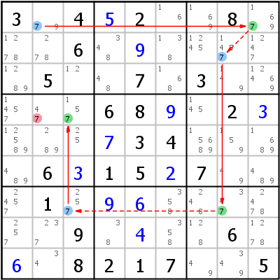

HoDoKu Solving Technique Index: Example for "X-Chain"

Original sudoku:
3.4.2..8...6.......5..7.3.....68..2.....34....6.15.7...1.........9....6...8217..5
Use the following line if you want to load the sudoku in HoDoKu:
:0701:7:3.4+52..8...6.+9.....5..7.3.....68+9.2+3...+734....6+315+27...1.+9+6......9.+4..6.+6.8217..5::742:
The following representation can be pasted in most Sudoku programs:
.-----------------.-------------.--------------------. | 3 79 4 | 5 2 16 | 169 8 1679 | | 1278 278 6 | 348 9 138 | 1245 1457 1247 | | 1289 5 12 | 48 7 168 | 3 149 12469 | :-----------------+-------------+--------------------: | 1457 47 157 | 6 8 9 | 145 2 3 | | 12589 289 125 | 7 3 4 | 15689 159 1689 | | 489 6 3 | 1 5 2 | 7 49 489 | :-----------------+-------------+--------------------: | 2457 1 257 | 9 6 358 | 248 347 2478 | | 257 237 9 | 38 4 358 | 128 6 1278 | | 6 34 8 | 2 1 7 | 49 349 5 | '-----------------'-------------'--------------------'
Representation of the step:
.-------------------.-------------.----------------------. | 3 *79 4 | 5 2 16 | 169 8 *1679 | | 1278 278 6 | 348 9 138 | 1245 *1457 1247 | | 1289 5 12 | 48 7 168 | 3 149 12469 | :-------------------+-------------+----------------------: | 1457 4-7 *157 | 6 8 9 | 145 2 3 | | 12589 289 125 | 7 3 4 | 15689 159 1689 | | 489 6 3 | 1 5 2 | 7 49 489 | :-------------------+-------------+----------------------: | 2457 1 *257 | 9 6 358 | 248 *347 2478 | | 257 237 9 | 38 4 358 | 128 6 1278 | | 6 34 8 | 2 1 7 | 49 349 5 | '-------------------'-------------'----------------------' X-Chain: 7 r1c2 =7= r1c9 -7- r2c8 =7= r7c8 -7- r7c3 =7= r4c3 => r4c2<>7
Copyright © 2008-12 by Bernhard Hobiger
Last modified on May 5, 2025 by shorty#3746
(based of the 1to9only Github repo)
All material on this page is licensed under the GNU FDLv1.3.